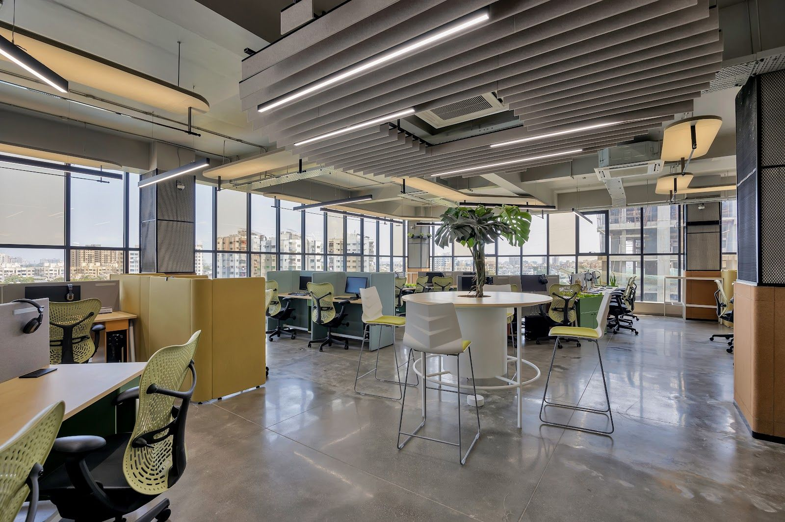
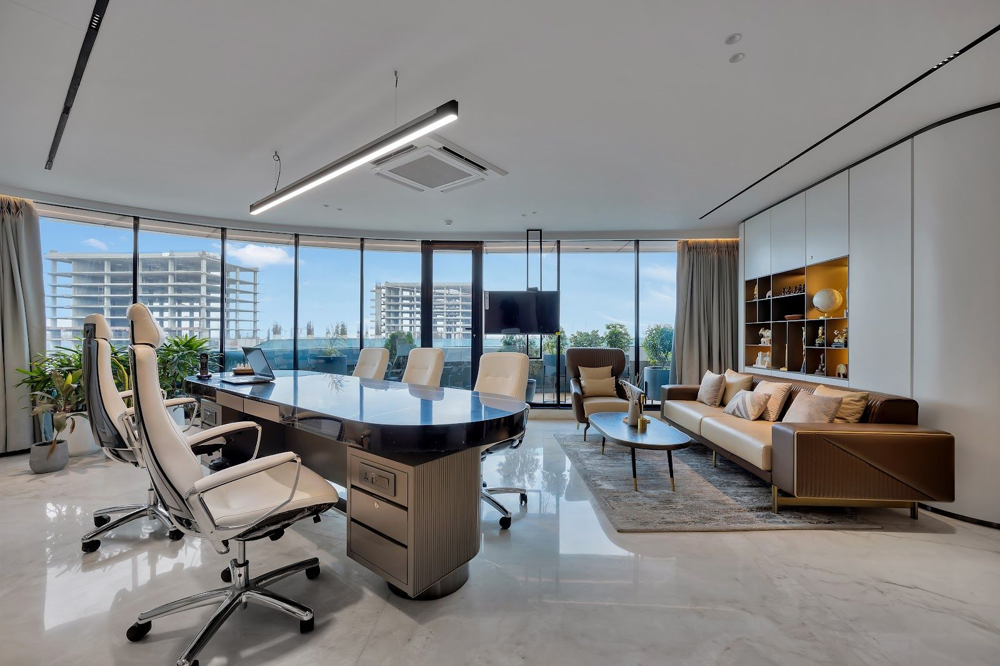

Signal
A spec sheet you can walk into. Cohuman as an engineering brand — everything measured, nothing decorated. White space is the material; the green is a signal, never decoration.

The mark
The wordmark already holds the brand idea: two green heads above the M, one green bar inside the O. Two people, one shared surface. Signal treats both as indicators — they light up, they never fill.
Two dots = status
Used only as a live indicator: selected finish, the active size, a form that sent. If it is green, something is switched on.
One bar = progress
The bar from the O becomes the active underline and the configurator's progress rail — the shared surface, literally under the thing you chose.
Drawing marks
Registration crosses, dimension lines and figure numbers. Every product image carries its real size — the website reads like a drawing set.
Palette
Near-total white and ink. Green is held back to roughly one percent of any screen — it reads as a signal precisely because there is so little of it.
Canvas · 62%
Panels · 18%
Type, spec block · 14%
Meta · 3%
Rules · 2%
State · 1%
Type
An extended grotesque that matches the width of the wordmark, a plain grotesque for reading, and a mono for anything you could measure.
for two.
A single beam-and-leg chassis that runs from an 800mm desk to a four-metre boardroom table. Pick a configuration, a length and a depth — the quote follows the spec, not the other way round.
Image
Studio cut-outs on pure white, three-quarter angle, never cropped. Interiors run high-key and cool, partially desaturated, so the product — not the room styling — is the subject.





Parts
Square corners, 1px rules, no shadows. Controls look like they belong on an instrument panel.
TOP-NOK
TOP-EWL
FRM-SWH
FRM-GRA
Index
New structure: the homepage is a product index, not a lifestyle carousel. One measured hero object, then every system as a row you can scan like a parts list.
Engineered
for two.
Scaled for
the floor.
Configurable desking, cabins and meeting tables — specified to the millimetre and quoted to your floor plan.


PDP
Officemate's structure, kept beat for beat — white name hero, a solid block holding the specs, one gallery per variant, prev / all / next. Their red block becomes ink; the thin serif becomes measured caps.
Single desk
Rules
How the direction behaves once it moves, and the lines it does not cross.
Plotter, not fade
- 01Lines draw in, 400ms, linear — rules, dimensions, the grid.
- 02Numbers tick to their value when a size changes.
- 03Images wipe left → right behind a hairline, never fade.
- 04Cursor over a product becomes a crosshair with live coordinates.
Hold the line
- 01One green thing per screen. If two things are green, one is wrong.
- 02No rounded corners anywhere except the two dots.
- 03Every product image carries a real dimension.
- 04Data in mono, claims in caps, reading in Archivo.
Off-limits
- ×Gradients, glass, drop shadows, glows.
- ×Thin serifs and "elegant" luxury cues.
- ×Stock lifestyle people holding coffee.
- ×Bento grids of rounded cards.